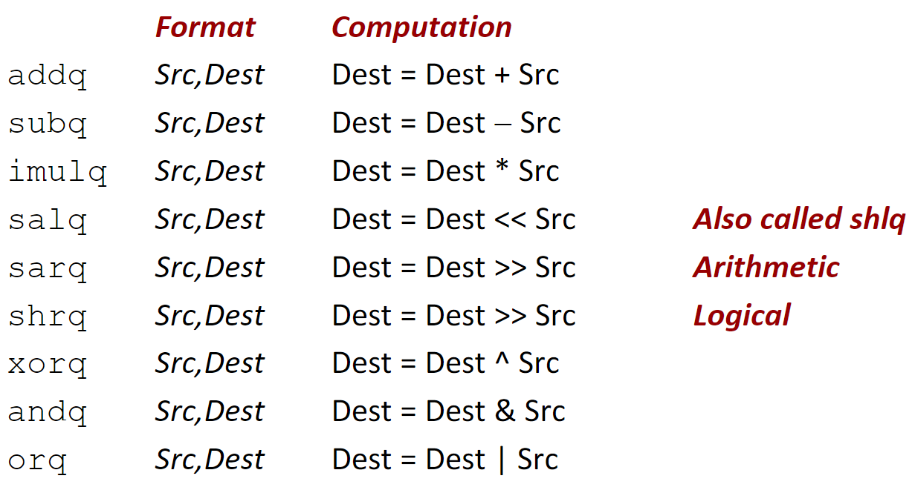
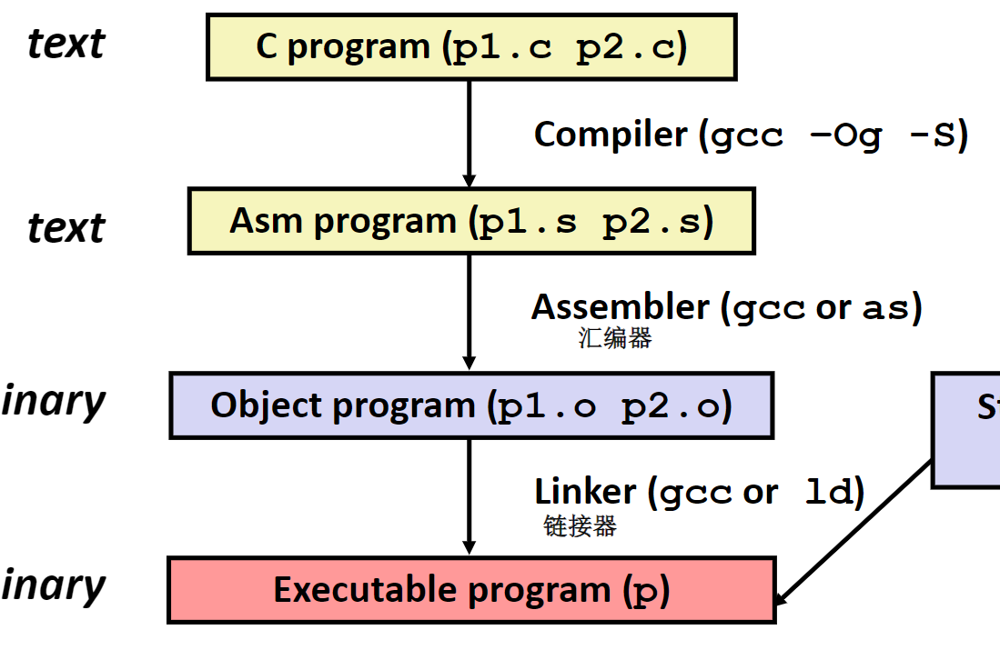
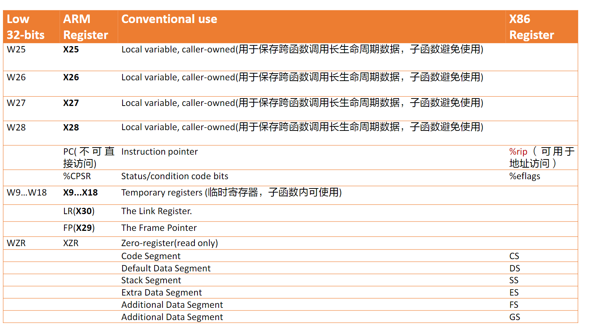

程序的机器级表示
也就是汇编语言。不过根据CSAPP，我们并不需要完全掌握汇编语言，只需要学会阅读汇编语言，并通过对汇编语言的理解写出执行效率更高的C语言代码，毕竟在产生汇编语言这件事上，编译器比我们做得更好也更有耐心。
Intel处理器和架构的历史
Intel x86 处理器
在桌面，笔记本和服务器市场都占据很大的市场份额。这主要是因为Intel长期坚持的向前兼容策略，现在生产的处理器仍然可以兼容到1978年出现的8086处理器。
这类的处理器都是复杂指令计算机CISC，这类架构的特点就是提供极为复杂繁多的硬件指令供开发者使用，但是其中只有很小的一个子集是被Linux操作系统所使用的。
Intel 64位处理器历史
2001年，Intel首次推出64位的计算机处理器，但是这款处理器几乎不兼容32位的应用程序，运行的效率极低，在推出之后的不久就被市场所拒绝。同时，AMD公司采用逐步演进的方式推进64位架构的普及，同时完全兼容之前的32为，在市场中获得了极大的成功，因此现在的64位架构也被称为amd64。
IA32就是Intel公司的32位指令集，x86-64就是64位的指令集了。
汇编语言基础
定义
- 架构
Architecture：也被称为ISA，为了编写汇编语言我们需要知道的处理器知识。比如具体的指令集和寄存器。 - 微架构
Microarchitecture：架构的具体实现。比如缓存的大小和处理器运行的频率。 - 代码格式：
- 机器码：字节级别的程序代码，处理器可以直接执行
- 汇编代码：机器码的文本表示方式。
- ISAs举例：
- Intel: IA32, x86-64
- Arm
- RSIC V
汇编语言代码的运行环境

在汇编语言运行时，处理器的下列信息是可以访问的：
PC: Program counter 程序计数器，也就是下一条需要执行的指令的地址- 寄存器文件：程序中大量使用的变量存储在这里
- 条件码：存储各种操作的结果类型，比如运算中是否溢出，是否为0
汇编语言支持多种不同的数据类型，在实际运行的过程中，针对不同的数据类型有着不同的指令，这些指令往往只有后缀上的区别。下面是支持的数据类型：
- 1，2，3，8字节的整数
- 4，8，10字节的浮点数
- 8，16，32，64字节或者更多的向量数据，由
SIMD指令集使用，通过被用在媒体数据中 - 字节编码的指令
- 在运行中没有任何聚合的数据类型，例如结构体或者联合
在汇编语言运行的过程中还可以访问一系列的寄存器文件，有一些寄存器的具有着约定的含义，例如%rsp寄存器就储存着栈指针的地址。同时使用寄存器还得遵循一系列的规则。每个寄存器都是8个字节大小，但是我们可以通过一些其他的名称来访问这些寄存器的低字节空间。
条件码在执行条件跳转指令，类似于C语言中的if时，有着很大的作用。不过我们通常不需要访问这些数据，而是通过一系列的指令来实现条件跳转操作。
汇编语言指令
汇编语言中的可执行的操作：在内存和寄存器之前传送数据，对寄存器或者内存中存储的数据进行算术操作，在执行指令的过程中进行控制转移。
传送数据指令
movq Source, Dest
指令的操作数：
- 立即数：直接编写在代码中的整数，不可变。例如
$0x400$ - 寄存器：十六个可以访问的寄存器中的一个
- 内存：在内存中通过地址访问的一系列的连续的字符，这个地址一般通过一个寄存器指定。这串字符的长度通过指令操作的类型来确定，例如指令的后缀是
q，就说明这是一个8字节的操作指令，这串字符的长度就是8个字节。指令操作的数据类型不仅在访问内存时有用，在访问寄存器时也有用，我们已经知道使用寄存器也可以访问寄存器低位的空间了。
| 数据类型 | 汇编代码后缀 | 大小 |
|---|---|---|
| 字节 | b | 1 |
| 字 | w | 2 |
| 双字 | l | 4 |
| 四字 | q | 8 |
| 单精度浮点数 | s | 4 |
| 双精度浮点数 | l | 8 |
双精度浮点数和双字的后缀一样不会引起指令的歧义，操作整数和浮点数采用的两套不同的指令
传送指令举例：
movq $0x4 %ras：将立即数4复制到寄存器ras。
在汇编语言中，我们有以下的几种方式来访问内存：
(R)其中R是一个特定的寄存器，这句指令就是访问寄存器R存储地址的内存空间。例如：movq $-0x134 (%rax)：将一个立即数复制到内存中，目标内存地址由寄存器%rax指定。D(R)其中D是一个立即数，R就是寄存器。这句指令就是在上一句指令的基础上添加了一个常数的偏移量D，所访问的内存地址就是R储存的值加上D，例如movq $0x123 0x8(%rsp)，将一个立即数复制到寄存器%rsp存储值加上8对应的内存空间中D(Rb,Ri,S)，最为通用的内存访问方式。其中D是一个立即数，称作“偏移量”，Rb,Ri是两个寄存器，s也是一个立即数，称作“比例因子”，这个语句访问地址的计算公式是所对应的值
其实访问内存的方式有且仅有一种，就是最通用的那种访问方式，前两种方式就是第三种方式的简化形式。同时需要说明的，简化的方式并不只有上述的两种。
地址计算指令
leaq Src, Dest：Src是一个地址表达式，Dest存放前述的表达式计算的值。地址表达式的格式和上面内存中寻址的方式是一致的。
在实际中，地址计算指令并不全部是用于地址计算的。因为人们发现这个指令在进行一些运算是十分的方便，例如：为了计算x+4 * y，其中x储存在%rdi寄存器中，y存储在%rsi寄存器中，我们可以用这条指令来计算这个表达式的值leaq (%rdi, %rsi, 4), %rdi，并且把结果存储在%rdi寄存器中。
算术运算指令

下面给出一段C语言程序编译为汇编代码的例子，辅助理解。首先，C语言代码如下：
long arith(long x, long y, long z)
{
long t1 = x+y;long t2 = z+t1;
long t3 = x+4;long t4 = y * 48;
long t5 = t3 + t4;long rval= t2 * t5;
return rval;
}
这个函数编译为汇编代码是：
arith:
leaq (%rdi,%rsi), %rax# t1
addq %rdx, %rax# t2
leaq (%rsi,%rsi,2), %rdx
salq $4, %rdx# t4
leaq 4(%rdi,%rdx), %rcx# t5
imulq %rcx, %rax# rval
ret
同时，在这段汇编代码中，寄存器和C语言中变量的对应关系为：
| 寄存器 | C语言中的变量 |
|---|---|
%rdi | x |
%rsi | y |
%rdx | z, t4 |
%rax | t1, t2, rval |
%rcx | t5 |
结合着下面给出的寄存器使用列表，这段汇编代码还是很好理解的。 我们可以看见在汇编代码中，编译器使用的大量的leaq来实现算术运算。
从C语言到可执行程序

编译为汇编代码
采用gcc -Og -S指令可以将C语言源文件编译为汇编语言文件，在指令中-Og表示让gcc采用比较低的优化等级，避免产生的汇编代码的结构和C语言相差过大，方便我们学习。
需要注明的是，汇编语言和平台强相关，在不同平台上产生的汇编代码可能差异巨大
我们用一个hello.c的C语言代码来作为示例：
#include <stdio.h>
int main()
{
printf("world, hello!\n");
return 0;
}
使用gcc -Og -S hello.c来产生汇编语言：
.file "001.c"
.text
.section .rodata.str1.1,"aMS",@progbits,1
.LC0:
.string "world, hello!"
.text
.globl main
.type main, @function
main:
.LFB23:
.cfi_startproc
endbr64
subq $8, %rsp
.cfi_def_cfa_offset 16
leaq .LC0(%rip), %rdi
call puts@PLT
movl $0, %eax
addq $8, %rsp
.cfi_def_cfa_offset 8
ret
.cfi_endproc
.LFE23:
.size main, .-main
.ident "GCC: (Ubuntu 9.4.0-1ubuntu1~20.04.1) 9.4.0"
.section .note.GNU-stack,"",@progbits
.section .note.gnu.property,"a"
.align 8
.long 1f - 0f
.long 4f - 1f
.long 5
0:
.string "GNU"
1:
.align 8
.long 0xc0000002
.long 3f - 2f
2:
.long 0x3
3:
.align 8
4:
从汇编代码到可执行文件
在这个过程中，涉及到两个程序——assembler汇编器和linker链接器。汇编器将上面产生的汇编代码翻译为二进制代码，链接器负责链接一些运行时库，比如在上面hello.c中使用到的printf函数。
链接分为静态链接和动态链接，这个不过多叙述
可执行文件反编译为汇编文件
有些时候，我们想查看手里的二进制文件的汇编代码，我们可以使用反汇编器和调试器。
使用反汇编器：objdump -d exec其中exec是可执行文件的名称
使用调试器：gdb exec其中gdb是一款功能强大的调试器，具体的使用不做叙述。
注意：对不少商业软件进行反编译是违反用户协议的
华为鲲鹏处理器简介
Arm处理器简介
Arm处理器是一种不同于Intel系列的处理器，采用一套完全不同的指令集架构。Arm处理器采用授权的方式在全球范围内进行生产和研发。华为购买了Arm处理器的架构授权，其的产品就是鲲鹏处理器。
鲲鹏处理器简介
不搞硬件 略
Arm寻址方式
在Arm中有这些重要的寄存器：

可以发现这寄存器的命名比
x86-64那座屎山好多了
下面这张图给出了AArch64和x86中寄存器的不少对比

和x86一样，在AArch64中也存在着状态寄存器，下表给出

在AArch64下有着下列的寻址方式：
- 立即数寻址
- 寄存器寻址
- 寄存器间接寻址
- 基址寻址
- 相对寻址
还有多寄存器寻址、堆栈寻址和寄存器移位寻址等方式，这里不做叙述
立即数寻址
在立即数寻址指令中地址码就是操作数本身，可以直接使用。在AArch64中，立即数采用#开头。
例如：MOV R0, #0xFF000，将立即数中的值存入R0寄存器中
寄存器寻址
操作数的值存储在寄存器，在指令执行时直接去除寄存器中的值进行计算。
例如：MOV R1,R2将R2寄存器的值复制到R1中。
寄存器间接寻址
将操作时从寄存器中所指向的内存中取出，寄存器内存储的是内存地址。
同时，在AArch64中，不能直接对内存中的数据进行运算，需要先用指令将数据从内存中取出，一般常用的指令是LDR读取内存数据，STR写入内存数据。
例如：LDR R1, [R2]将R2地址中指向的数据写入R1。STR R1,[R2]将R1的值写入R2地址对应的内存空间
基址变址寻址
将基址寄存器的内容和指令中给出的偏移量相加，在得到有效操作数的地址。基址变址寻址存在三种不同的寻址方式：
- 前索引
LDR R0, [R1,#4]，访问的地址是R1中的地址加上4。 - 自动索引
LDR R0, [R1, #4]!，访问的地址同上，但是会将新的地址再写入R1。 - 后索引
LDR R0, [R1], #4，访问的地址就是R1中存储的指令，但是在访问之后将相加的值写入R1
AArch64不再做过多的介绍，如有兴趣自行学习